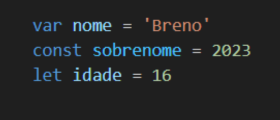

Diferença entre (var, let, const)
Var
Let
Const
a variável var é declarada e
iniciada no escopo da função
não respeitando bloco e permitindo
a redeclaração e reatribuição.
a variável let é declarada no escopo da função,
mas só é inicializada posteriormente
respeitando bloco e permitindo reatribuição,
mas não permite a redeclaração.
a variável let é declarada no escopo da função,
mas só é inicializada posteriormente
respeitando bloco e permitindo reatribuição,
mas não permite a redeclaração.
Obs 1:
Ao declarar uma variável sem o var, sem o let
ou sem o const, ela é criada no escopo global.
Obs 2:
Ao declarar uma variável sem o var, sem o let
ou sem o const, ela é criada no escopo global.
Exemplo:
